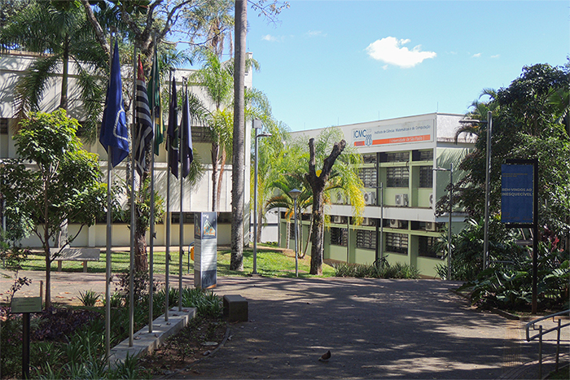

Welcome to Institute of Mathematics and Computer Science!

The Institute of Mathematical and Computer Sciences (ICMC) is a teaching and research unit of the University of São Paulo (USP), created in 1971 and located on the USP campus in São Carlos, 230 km from the capital of São Paulo. The Institute occupies an area of 18,000 m² and has around 2,000 students divided into nine undergraduate courses and five graduate programs, with a staff of 129 professors and 108 technical-administrative employees.
The ICMC is one of the leading Brazilian institutions in the fields of mathematics, applied mathematics, computer science, and statistics, and is recognized worldwide as a center of excellence in the production and dissemination of knowledge. Our impact on society is achieved through the training of human resources at the undergraduate and graduate levels, the development of cutting-edge research, and the extension of services to the community.
Our modern and well-equipped facilities include a privileged and extensive green area. The ICMC has a library with approximately 140,000 volumes and 23,000 electronic periodical titles, and features state-of-the-art teaching environments, auditoriums, multimedia and videoconferencing classrooms, and teaching laboratories open 24 hours a day. The ICMC's computer park consists of up-to-date equipment, with 100% of its area covered by high-performance wireless internet.
Furthermore, you can rely on the infrastructure of the USP campus in São Carlos, which offers facilities such as a restaurant, accommodation, transportation between campuses, medical and dental services, a daycare center, and a sports center.
Check out ICMC institutional video!